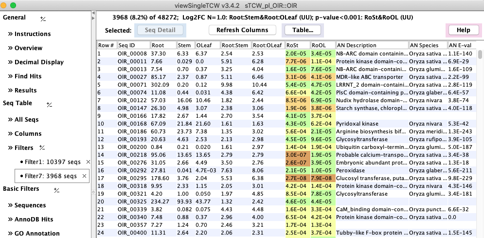
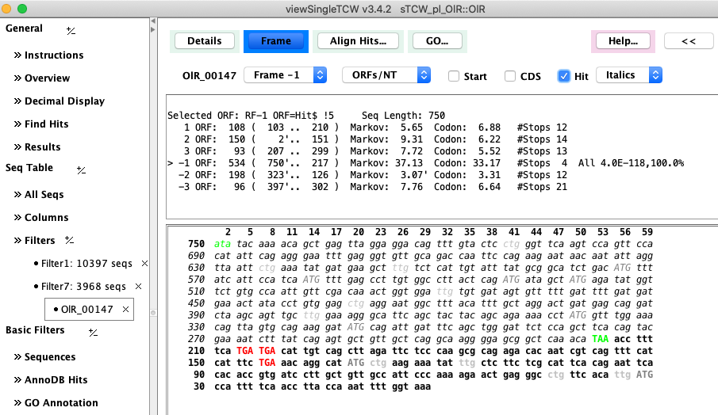
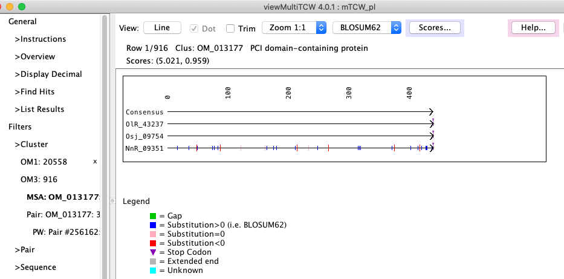

TCW provides analysis and query for sequences (transcriptome, proteome), and comparison of species sequences.
TCW uses Java, mySQL, optionally R, and various External packages.
It has been tested on Linux and Mac.
| Download |
| |
TCW_4.tar.gz
Executables, demos, external packages, R scripts |
| |
|
| Documentation |
| |
| Summary |
Inputs, outputs and processing |
| Docs |
Documentation pages |
|
| | |
| Tour |
| |
| runAS
| Obtain UniProt and GO for input to runSingleTCW |
| runSingleTCW
| Build single species annotated database |
| runDE
| Add differential expression |
| viewSingleTCW
| Query results of a single species database |
| runMultiTCW
| Build multi-species comparison database |
| viewMultiTCW
| Query results of multi-species database |
|
| |
|
| Features |
| |
| DIAMOND |
Integration of DIAMOND for fast annotation. |
| ORF finder |
The algorithm uses hit information and on-the-fly training for a 5th-order Markov score. |
| Differential Expression |
Users can supply a file of R commands for DE computation, or use built-in computations. |
|
| |
|
| Reference |
| |
C. Soderlund (2022) Transcriptome computational workbench (TCW): analysis of single and comparative transcriptomes. BioRxiv |
| |
C. Soderlund, W. Nelson, M. Willer and D. Gang. (2013) TCW: Transcriptome Computational Workbench. PLoS ONE |
| |
|
|

Figure 1: viewSingleTCW - result of a query on DE values. |

Figure 2: Computed ORF using hit coordinates as a guide. |

Figure 3: viewMultiTCW - dynamic programming alignment of a BBH cluster. |
|
Funding
All upgrades starting with TCW v1.3 have been developed by CAS without funding.
This project was funded in part by National Science Foundation grant IOS-1044821.
NSF Disclaimer:
Any opinions, findings, and conclusions or recommendations expressed in this material are those of the author(s)
and do not necessarily reflect the views of the National Science Foundation.
|


{kind=link}
{kind=link}
{kind=link}